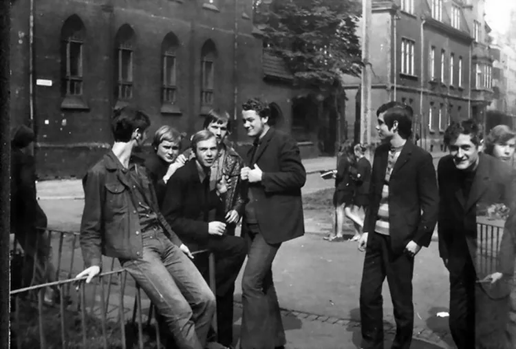
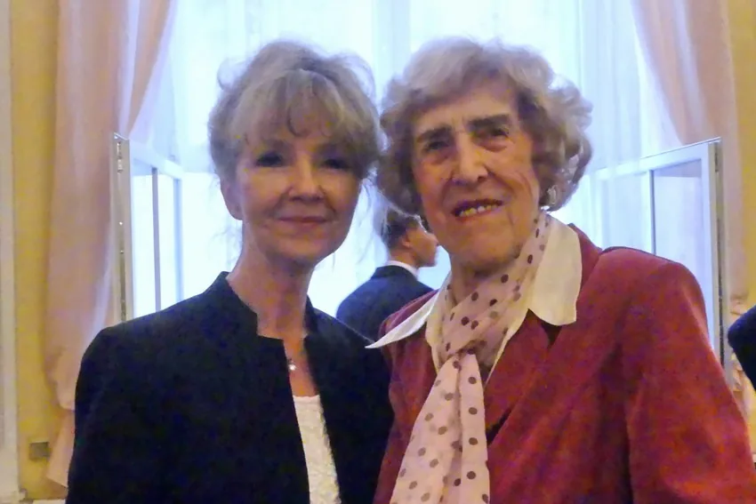

Strona absolwentów Energetyka i Elektronika w Bytomiu
Wspomnienia, zdjęcia, roczniki i spotkania po latach. Wszystko, co łączy się z naszą Budą, zebrane w jednym miejscu.
To była szkoła, to były czasy!
Najnowsze wieści

Wieści
Informacje na gorąco: spotkania, uroczystości i sprawy strony. Najnowsze wpisy od razu na górze, czytelne także na telefonie.
Cegła do przeczytania
Ciekawe listy od absolwentówZakładanie konta i rejestracja na stronie
Informacja na gorącoNestorka naszej szkoły
Informacja na gorącoSafari Jana Kasperka
Ciekawe listy od absolwentówDzień Kobiet 2026
Informacja na gorąco
Nasza szkoła dawniej i dziś
Szkoła działa od 1953 roku. Zbieramy tu wszystko, co łączy się z jej historią: wspomnienia nauczycieli i absolwentów, historię budynków, dyrekcję i kadrę z minionych lat, zajęcia pozalekcyjne i uroczystości jubileuszowe.
Ludzi pracujących w „Energetyku” łączyła wspólna pasja zawodowa. Powstała tu wspólnota dyrekcji, nauczycieli i uczniów, a zimowiska, wycieczki i koła zainteresowań dają wspomnienia, które trwają do dziś.
- Technikum Gospodarki Komunalnej
pierwsze roczniki absolwentów 1957-1959 - Technikum Energetyczne i Elektroniczne
wydziały dzienne i wieczorowe - Nasza szkoła teraz
od 1 września 2012 roku; dziś Technikum nr 4 im. Marii Skłodowskiej-Curie
Roczniki absolwentów
Wykaz absolwentów według roku ukończenia i typu szkoły, razem z karierami, osiągnięciami i pasjami. Listy klas są widoczne po zalogowaniu.
Typy szkół w wykazie: Technikum Gospodarki Komunalnej, Technikum Energetyczne, Technikum Elektroniczne, Technikum Elektryczno-Elektroniczne, Liceum Zawodowe, Liceum Profilowane i Zasadnicza Szkoła Zawodowa.
Fotogaleria
Galerie absolwentów, spotkania po latach, zdjęcia archiwalne i uroczystości. Zdjęcia przesuwa się palcem lub myszą, a po kliknięciu ogląda w całości.
Klub Emerytów, Absolwentów i Sympatyków
Klub powstał w lutym 1996 roku z potrzeby serca i wielu dobrych wspomnień o naszej szkole. Elżbieta Sochacka „Basia” i Teresa Pawela-Nigrin zorganizowały spotkanie byłych nauczycieli, które miało być jednorazowe. Spotkania trwają do dziś, także z udziałem absolwentów i sympatyków.
Dzięki uprzejmości naszego absolwenta Piotra Mankiewicza spotykamy się w „Bacówce”, największej sali Muzeum Chleba w Radzionkowie.
Na stronie znajdziesz też
Każdy dział z własną podstroną i wyszukiwarką, tak żeby do wspomnień sprzed lat dało się dotrzeć w kilka sekund.
Wspomnienia
Teksty nauczycieli i absolwentów o tym, jaka była nasza szkoła.
Nauczyciele
Sylwetki, pseudonimy i anegdoty o tych, którzy nas uczyli.
Spotkania po latach
Zapowiedzi i relacje ze spotkań klasowych. Organizujesz spotkanie? Napisz do nas.
Bytom wczoraj i dziś
Miasto naszej młodości: kościoły, legendy, dawne i dzisiejsze ulice.
Nasze archiwum
Taśmoteka filmowa, tablo, tarcze, odznaki i zdjęcia z 70 lat szkoły.
Blogi użytkowników
Własne cykle naszych absolwentów, z komentarzami czytelników.
Krzyżówki
Hasła o szkole, nauczycielach i przedmiotach, od pseudonimów po fizykę.
Plikownia i instrukcje
Materiały do pobrania i poradniki, jak korzystać ze strony.
Odeszli od nas
Pamięć o nauczycielach i absolwentach, którzy odeszli na zawsze.
Konto na stronie absolwentów
Rejestrujemy tylko absolwentów i pracowników szkoły. Po zalogowaniu masz dostęp do wszystkich zasobów strony, w tym do listy kontaktów i strony swojej klasy.
- Podaj nazwisko i imię z dnia ukończenia szkoły (Panie nazwisko panieńskie).
- Podaj klasę i rok ukończenia szkoły, ewentualnie specjalność, np. 5a 1965, elektroenergetyka.
- Po sprawdzeniu zakładamy konto i przesyłamy login oraz hasło.